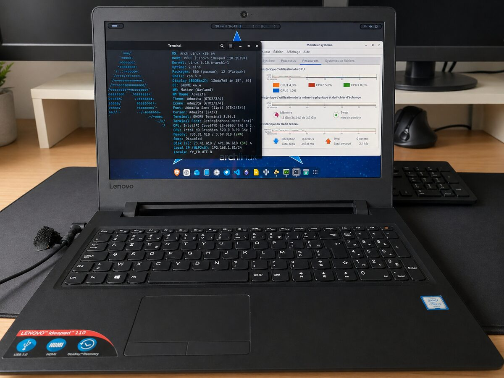
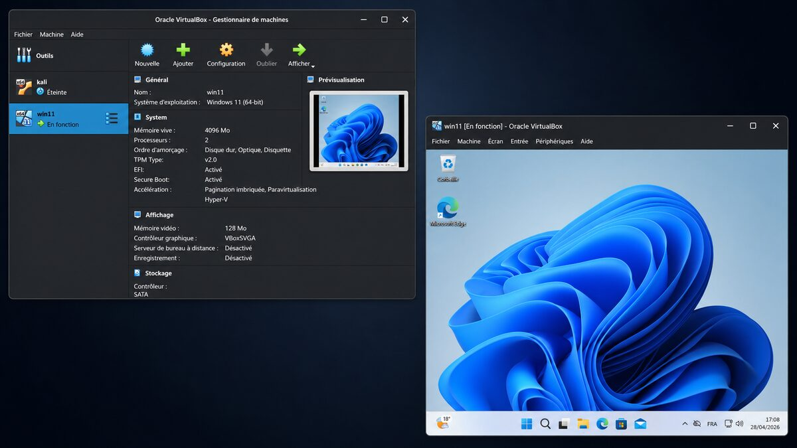
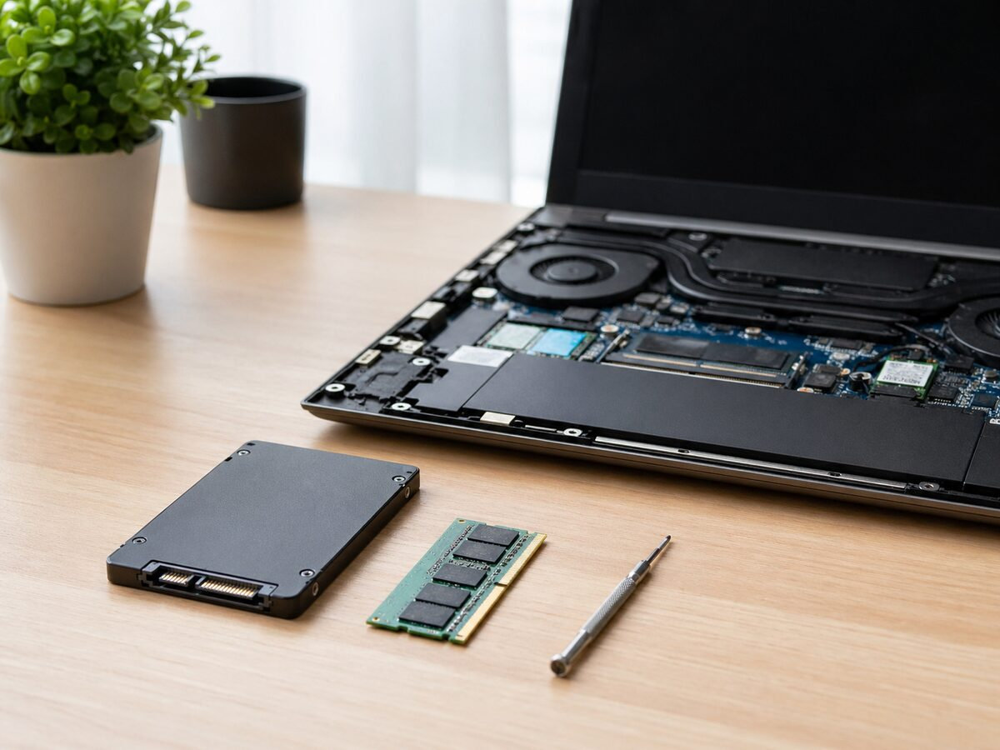
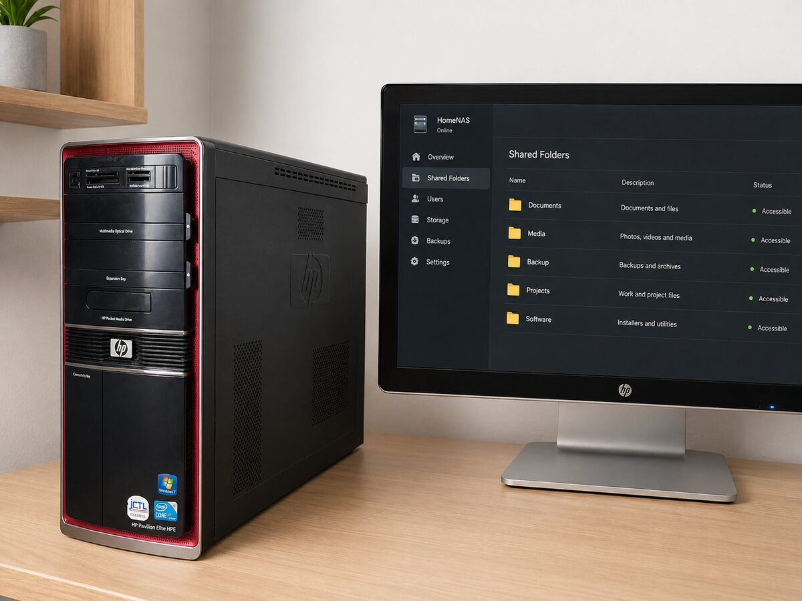
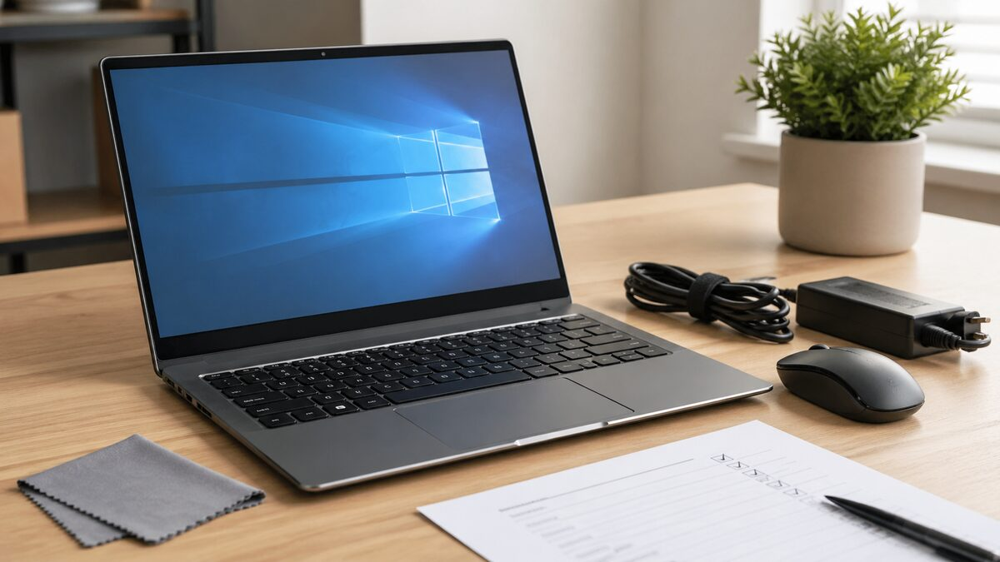
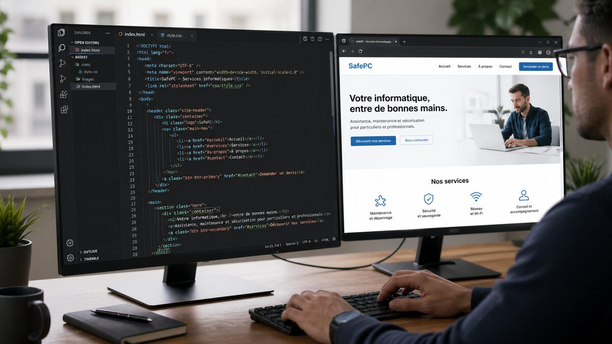

PC lent au démarrage
Le PC met plusieurs minutes à devenir utilisable, ce qui retarde chaque début de journée.
Service informatique local — Tarare
Diagnostic, optimisation et conseils informatiques à domicile pour retrouver un ordinateur plus propre, plus fluide et mieux sécurisé.
Diagnostic clair — pas d'optimisation miracle — conseils honnêtes
Vous reconnaissez-vous ?
Le PC met plusieurs minutes à devenir utilisable, ce qui retarde chaque début de journée.
Le manque d'espace provoque des ralentissements, des mises à jour incomplètes et des blocages.
Des logiciels tournent en arrière-plan et consomment inutilement les ressources.
La protection existe parfois, mais sans réglages adaptés ni suivi des mises à jour essentielles.
L'offre principale
La démarche
Chaque intervention suit une démarche précise pour garantir un résultat compréhensible et utile.
Tous les services
SafePC propose une offre élargie pour vous accompagner au-delà du simple dépannage ponctuel.
Résolution de lenteurs, blocages, erreurs système et problèmes logiciels du quotidien.
Demander un diagnostic →Amélioration des performances avec choix de composants compatibles et installation propre.
Parler de votre PC →Stockage familial, sauvegarde automatique locale ou cloud et plan de sauvegarde simple.
Sécuriser mes données →Site vitrine simple pour artisan, indépendant ou commerce local, clair et facile à maintenir.
Lancer mon site →Aide au choix d'un PC reconditionné et préparation avant livraison selon votre usage.
Être conseillé →Bonnes pratiques : mises à jour, antivirus, mots de passe robustes, prévention phishing.
Renforcer ma sécurité →Nom de domaine, hébergement, email professionnel et maintenance légère de base.
Mettre mon site en ligne →Aide rapide sans déplacement pour diagnostics simples, réglages et accompagnement guidé.
Être rappelé →Les bonnes raisons
Diagnostic expliqué simplement, sans jargon inutile ni promesse impossible.
PC, sauvegarde, sécurité, réseau, site internet : SafePC vous aide à structurer vos outils numériques.
Optimisation, upgrade ou remplacement : l'objectif est de proposer la solution la plus logique.
Intervention autour de Tarare, avec explications simples et accompagnement personnalisé.
Ce qui a déjà été fait

Problème : Système vieillissant et démarrage lent.
Action : Nettoyage des services, optimisation démarrage et vérifications système.
Machine plus stable et réactive pour un usage quotidien.

Problème : Besoin d'un environnement isolé pour essais logiciels.
Action : Création d'une VM et paramétrage réseau/sécurité de base.
Plateforme de test prête sans risque pour le poste principal.

Problème : Ouverture des applications trop lente.
Action : Installation SSD, ajout RAM et optimisation post-upgrade.
Démarrage rapide et meilleur confort multitâche.

Problème : Données familiales dispersées sur plusieurs appareils.
Action : Mise en place NAS, dossiers partagés et sauvegarde automatique.
Fichiers centralisés et accessibles plus simplement.

Problème : Besoin d'un poste fiable avec budget maîtrisé.
Action : Contrôles matériels, configuration et optimisation initiale.
Ordinateur prêt à l'emploi dès la livraison.

Problème : Activité locale sans présence web claire.
Action : Conception HTML/CSS, structure claire, mise en ligne.
Site professionnel pour présenter services et contact.
SafePC ne promet pas de transformer un vieux PC en machine neuve. SafePC ne vend pas de logiciel magique. SafePC réalise un diagnostic honnête, applique des optimisations utiles et recommande un upgrade uniquement si c'est réellement pertinent.
Transparent et simple
Diagnostic seul
30 €
20 à 30 minutes
Pour savoir si le PC est optimisable.
DemanderRecommandé
Diagnostic + optimisation
50 €
45 à 60 minutes
L'offre principale, la plus complète.
DemanderIntervention étendue
70 €+
Jusqu'à 1h30
Pour les cas plus longs ou plus complets.
DemanderLes prestations matérielles, NAS, sauvegarde avancée ou revente PC sont réalisées sur devis.
Questions fréquentes
Oui, un diagnostic permet de savoir précisément ce qui est possible. Si un gain réel est limité, SafePC vous le dit clairement.
Oui, lorsque c'est pertinent. La réinstallation est proposée comme solution ciblée, pas comme réponse automatique.
SafePC peut traiter de nombreux cas courants et renforcer la sécurité. Un diagnostic initial permet d'évaluer l'intervention adaptée.
Oui, selon la compatibilité du matériel. Cette prestation est distincte de l'offre principale et se fait sur devis.
Oui, SafePC peut vous orienter vers une configuration fiable et adaptée à votre usage et votre budget.
Oui, principalement autour de Tarare et communes voisines : L'Arbresle, Amplepuis, Pontcharra-sur-Turdine, Thizy-les-Bourgs, Villefranche-sur-Saône et alentours.
Oui, SafePC accompagne aussi les indépendants et petites structures locales sur des besoins simples et concrets.
Prendre contact
Décrivez simplement le problème : PC lent, écran bloqué, manque de place, besoin de sauvegarde, installation matériel…